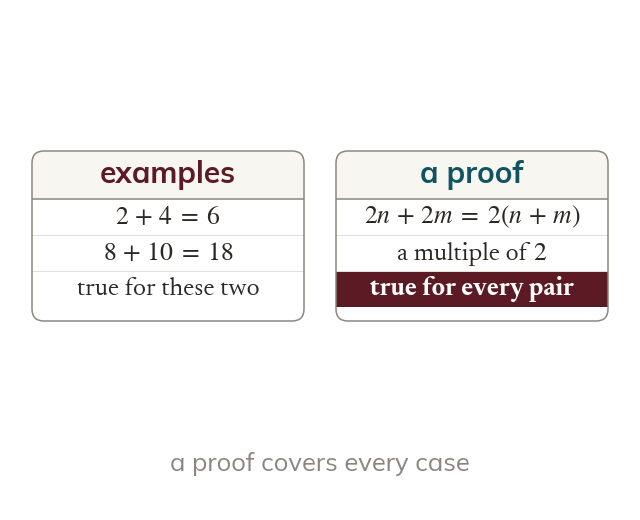
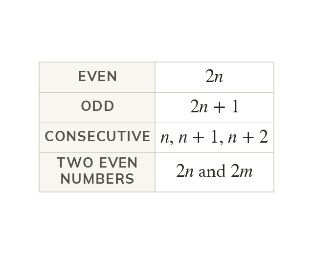
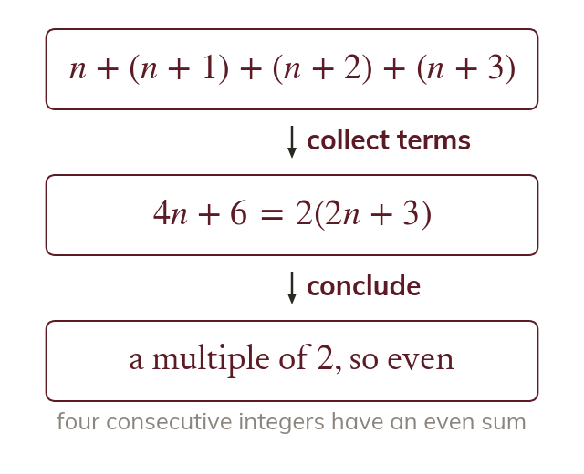
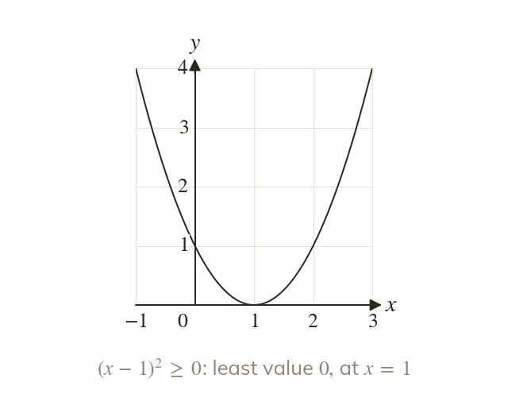
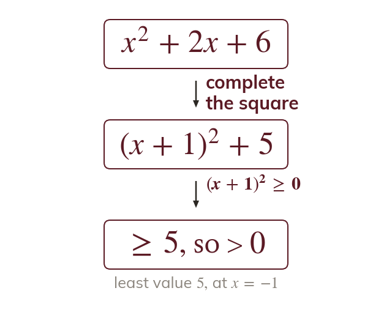

Examples are not a proof
Checking examples shows that a statement is true for those examples only. A proof shows that it is true for every case at once.
A proof shows that a statement is true in every case, not just the cases checked. Writing even, odd and consecutive numbers in algebra, and completing the square, turn claims about all numbers into a few lines of working; next lesson proves identities and geometric results the same way.
Work down the page at your own pace. Write every answer in your book first, then click to check it.
Read each card, then follow the worked examples one step at a time.

Checking examples shows that a statement is true for those examples only. A proof shows that it is true for every case at once.

With an integer, is even, is odd, and are consecutive. Two different numbers need two different letters.

The algebra must reach a form that shows the result, such as twice an integer. Then a sentence states what has been proved.
Pick an answer. If it's wrong, the feedback tells you which mistake it was.
Read each card, then follow the worked examples one step at a time.

Any real number squared is or positive. So and it equals only when

Writing a quadratic as shows that its least value is When the quadratic is positive for every
Pick an answer. If it's wrong, the feedback tells you which mistake it was.
Finished? Next lesson: 7.4b Proving Identities and Geometric Results.
For each skill, tap the one that is true for you today. Your Revise pages start with anything you mark Not yet.
Your ratings are saved on this device only.
Log in, then search for a code to practise that skill.